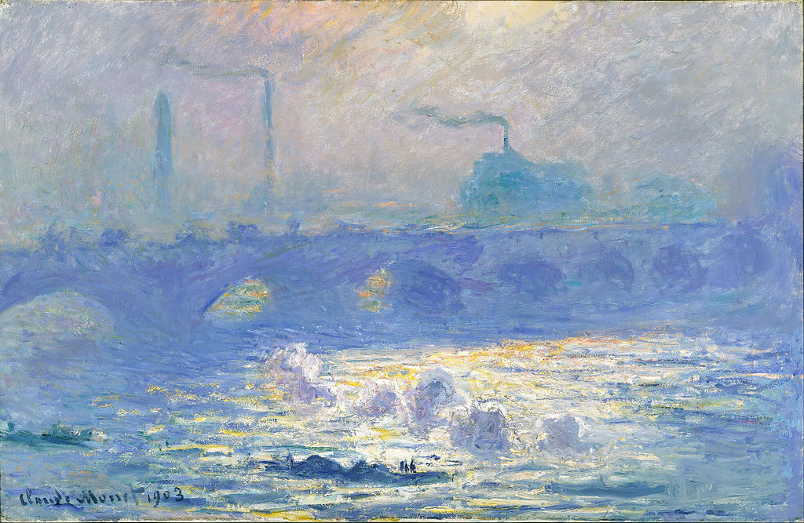

<head>
<meta charset="UTF-8" />
<meta name="keywords" content="drawing, painting" />
<meta name="description" content="drawings by Sunjy" />
<title>Sunjy</title>
<link rel="shortcut icon" type="image/x-icon" href="../../mImages/mCommon/favicon.ico" media="screen" />
<link rel="stylesheet" type="text/css" href="../../mCsses/mCommon/mCssA.css" />
<link rel="stylesheet" type="text/css" href="../../mCsses/mCommon/mCssB.css" />
<link rel="stylesheet" type="text/css" href="../../mCsses/mCommon/mCssC.css" />
<link rel="stylesheet" type="text/css" href="../../mCsses/mCommon/mCssD.css" />
<link rel="stylesheet" type="text/css" href="../../mCsses/mContent/mCssA.css" />
<link rel="stylesheet" type="text/css" href="../../mCsses/mContent/mCssB.css" />
<link rel="stylesheet" type="text/css" href="../../mCsses/mContent/mCssC.css" />
<link rel="stylesheet" type="text/css" href="../../mCsses/mContent/mCssD.css" />
</head>
<script type="text/javascript" src="../../mScripts/mContent/mContentAA.js" /></script>
<script type="text/javascript" src="../../mScripts/mContent/mContentAB.js" /></script>
<script type="text/javascript" src="../../mScripts/mContent/mContentAC.js" /></script>
<script type="text/javascript" src="../../mScripts/mContent/mContentAD.js" /></script>
<script type="text/javascript"></script> 
<script type="text/javascript">
document.write('<div class="mImgAbsolute"></div>');
/*
document.write('<p class="mFontSizeBColor" />From a white paper...</p>');
document.write('<table class="center"><tr><td>');
document.write('');
document.write('</td></tr></table>');
*/
</script>


<script type="text/javascript">
document.write('<p class="mFontSizeBColor" />Waterloo Bridge </p>');
document.write('<p class="mFontSizeSColor" />Waterloo Bridge by Claude Monet is one in a series of paintings of the famous bridge in London. All of the pictures in the “Waterloo Bridge” series share the same viewpoint overlooking the Thames. The paintings depict different times of the day and very different weather and light conditions.<br><br>From 1899 through 1901, Monet set up his paints in the Savoy hotel and on the river’s north bank and painted the bridge over 40 times. He depicted the “Waterloo Bridge” more than either the “Houses of Parliament” or the “Charing Cross Bridge,” from his two other London series.<br></p>');
document.write('<table class="center" /><tr><td>');
document.write('<br>From 1899 through 1901, Monet set up his paints in the Savoy hotel and on the river’s north bank and painted the bridge over 40 times. He depicted the “Waterloo Bridge” more than either the “Houses of Parliament” or the “Charing Cross Bridge,” from his two other London series.<br>" />');
document.write('</td></tr></table>');
</script>


